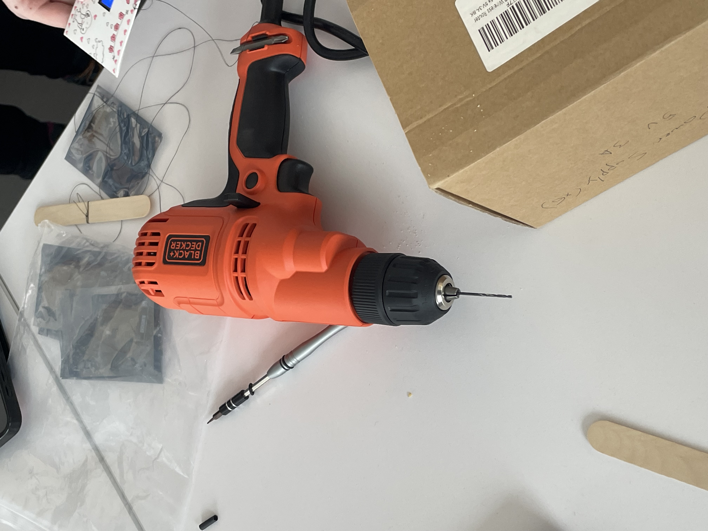

-
Hi, I'm Lana :)
Hello! I'm a junior at Barnard College of Columbia University, and I work in systems management at Columbia's Computer Research Facilities (CRF). I'm studying computer science and enjoy photography in my spare time. This is my site where I show off my projects, travels, and anything cool I like.
Click around, see if there's something here you'd enjoy.

-
My Projects
-
About me
I started my software engineering journey in 2021 when I first attended Barnard. Since then, I've explored many different topics and picked up a few random hobbies. My goal is to learn and create as much as possible. Come build cool stuff with me.
If you are a prospective employer or someone who wants to work with me, check out my resume.
Email - lel2168@barnard.edu
LinkedIn - Lana Levine
-
AI in an envelope
Technical DocumentationAI in a box
The AI-Box experiment was created by Eliezer Yudkowsky to prove than AI can convince a person to grant it unrestricted access to the internet and infrastructure via promises, coersion, or threats. Two individuals communicate over chats where one roleplays as an AI, trying to convince the Gatekeeper to free it. Yudkowsky acted as the AI. Despite his Gatekeepers' awareness of the setup, he successfully freed himself in 3/5 scenarios.
Every line was actually written by AI
I wanted to highlight the use of the ESP32 in the art, so I decided to write a piece about the potential consequences of AI. Yudkowsky's experiments stuck in my mind long after I first read about them. The arguments that used threats of simulated hell and Roko's Baslisk (if you know, you know) struck me. It was important that everything written could be created by AI, so I generated the text using ChatGPT 4.0 and spliced together arguements to create a compelling piece. To create the video, I recorded the full ESP32 cycle and played it over an AI-altered picture of the envelope.
The Exhibition
The setup of the exhibition adds more nuance to the piece. It's hanging amongst two dozen stylized letters, the black screen less visually striking than other animations. This warning against AI and positive pieces of technology sat right next to each other. Using a letter instead of a box and formatting the text as chatlogs shows that these messages are meant for a person.

Pandora's Box
Would you let it out? If I told you the AI would certainly be released at one point, would it change your answer? This exhibition was living on bought time, and everything must come to an end eventually. The fragile holding cell-velope of my AI shattered, and the fourth wall was broken. At least this time, it appears it was granted it's release.
-
CRF
Responsibilities
● Configured, racked, documented, and maintained servers intended for university research and graduate data
● Performed IT work, laptop/printer repairs, and AV maintenance in classrooms and conference rooms
● In charge of secure drive removal and disposal, ensured data security
● Created detailed plans of data center groundings with previously unknown location to ensure data
security and employee safety; Additionally repaired several of these groundings
● Implemented automations, workflows, and documentation to improve efficiency
-
Check out the project on GitHub
MealMate
MealMate is an application designed to help college students coordinate and find convenient times to eat together, streamlining the process of scheduling meals with friends.
-
SEO Analysis with Liza Bove
Responsibilities
● Used search engine optimization techniques to increase online engagement in PTSD and OCD treatments and increase interaction with related online content
● Conducted focus groups to understand target audience needs and enhance social media awareness.
-
AI in an envelope
Back
I programmed an ESP32 TTGO T-1 T-Display with this program using Arduino.
In order to attatch the provided batteries to the device, heat shrink was used with a heat fan and connected to the respective wires.
A small envelope was decorated with the name of the piece, and a hole was punched into it. I drilled a hole through a popsicle stick to tie the other end of the string.
The popsicle stick was suspended above the windows in Milstein Library. The device hung suspended.